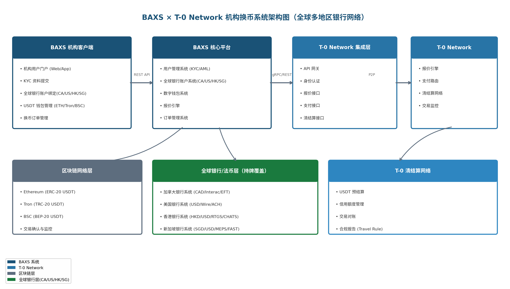
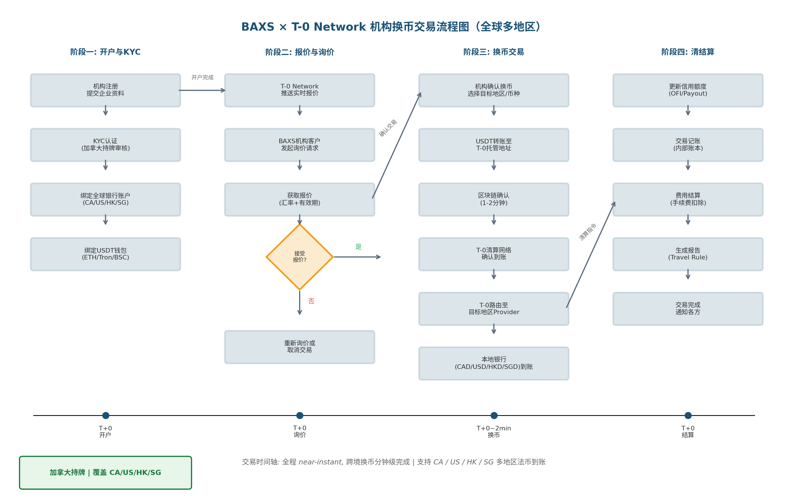

BAXS是一家持有加拿大金融牌照、专注于数字金融基础设施的金融科技公司，总部位于加拿大。凭借加拿大合规牌照优势，BAXS已构建覆盖北美、亚太等主要金融中心的全球银行网络，致力于为全球机构客户提供无缝衔接的数字资产与多币种法币兑换服务。核心业务包括：
T-0 Network是由Tether战略支持的机构级稳定币清结算网络，旨在通过USDT实现跨境支付的即时结算。核心能力包括：
通过将BAXS的加拿大持牌机构优势与全球多地区银行网络，和T-0 Network的全球清结算网络深度整合，构建一个面向全球机构客户的USDT-多法币（CAD/USD/HKD/SGD）换币平台，实现跨境换币的分钟级完成。BAXS作为加拿大持牌机构，为全球客户提供合规、安全的多币种资金通道。
核心价值主张：
| 维度 | 传统方案 | BAXS × T-0方案 | 提升幅度 |
|---|---|---|---|
| 结算速度 | T+2 ~ T+5 工作日 | T+0 (分钟级) | 99%+ |
| FX成本 | 1%~3% 手续费 | 10~50 bps | 80%~95% |
| 法币覆盖 | 单一币种 | CAD / USD / HKD / SGD 全球多币种 | 4+ 法币 |
| 操作时间 | 银行工作时间 | 7×24 全天候 | 全天候 |
| 透明度 | 中间环节不透明 | 区块链可追溯 | 完全透明 |
| 合规保障 | 各管一段 | 端到端Travel Rule | 全链路合规 |
目标客户群体：
客户需求痛点：
BAXS × T-0 Network机构换币平台包含六大核心功能模块，覆盖从开户、钱包管理、报价询价、换币交易到清结算的全生命周期。
| 模块 | 核心功能 | 对接系统 | 优先级 |
|---|---|---|---|
| 机构开户与KYC | 企业注册、资质审核、Travel Rule数据 | T-0 Identity API | P0 |
| 银行账户管理 | 全球多地区账户绑定(CA/US/HK/SG)、验证、多币种出入金 | 加拿大/美国/香港/新加坡银行系统 | P0 |
| USDT钱包管理 | 多链钱包创建/导入、地址白名单 | 区块链节点 | P0 |
| 报价与询价 | 实时报价流、询价锁定、汇率比较 | T-0 Quote API | P0 |
| 换币交易 | USDT→CAD下单、区块链转账、状态追踪 | T-0 Payment API | P0 |
| 清结算与对账 | 信用额度管理、交易对账、费用结算 | T-0 Settlement API | P1 |
为机构客户提供完整的企业级开户流程，包括企业资质认证、受益所有人(UBO)识别、以及符合FATF Travel Rule要求的KYC数据收集。
| 功能点 | 说明 | 数据字段 |
|---|---|---|
| 企业基本信息 | 公司名称、注册号、注册地址、营业地址 | legal_name, registration_number, incorporation_date |
| 企业资质文件 | 营业执照、公司章程、财务报表 | document_type, document_url, verified_at |
| 受益所有人(UBO) | 持股>25%的自然人，身份信息与地址证明 | ubo_name, ownership_pct, id_document |
| 授权操作人 | 被授权进行换币操作的人员 | authorized_person, role, contact_info |
| Travel Rule数据 | 符合IVMS101标准的发送方/接收方信息 | originator, beneficiary, geographic_address |
流程: 机构开户
1. 机构提交注册申请 (企业名称、邮箱、联系电话)
2. BAXS发送验证邮件，机构激活账户
3. 机构完善KYC资料 (企业资质、UBO、授权人)
4. BAXS进行自动审核 + 人工复核
5. 审核通过后，机构状态更新为 "VERIFIED"
6. 同步KYC数据至T-0 Network (通过Identity API)
7. T-0 Network返回机构DID (去中心化身份标识)
8. 机构可开始使用报价、换币等功能
状态机: PENDING → SUBMITTED → UNDER_REVIEW → VERIFIED | REJECTEDBAXS持有加拿大金融牌照，基于合规优势已建立覆盖加拿大、香港、新加坡、美国等主要金融中心的全球银行合作网络。本模块支持机构客户在全球多个司法管辖区绑定和管理银行账户，实现多币种法币（CAD/USD/HKD/SGD）的出入金操作。机构可根据业务需求灵活选择目标地区的银行账户接收换币资金。
BAXS依托加拿大持牌优势，与全球主要金融中心的持牌银行建立合作，为机构客户提供合规的多地区法币通道：
| 地区 | 支持币种 | 本地支付轨道 | 到账时效 | 账户格式 |
|---|---|---|---|---|
| 加拿大 | CAD | Interac e-Transfer / EFT | 即时~1工作日 | Institution + Transit + Account |
| 美国 | USD | Wire / ACH | 即时~1~3工作日 | Account Number + Routing Number |
| 香港 | HKD / USD | RTGS (CHATS) / FPS | 即时~1工作日 | Bank Code + Branch Code + Account |
| 新加坡 | SGD / USD | MEPS / FAST / GIRO | 即时~1工作日 | Bank Code + Branch Code + Account |
BankAccount {
id: UUID
institution_id: UUID // 所属机构
account_holder_name: String // 账户持有人名称
region: CA | US | HK | SG // 银行所在地区
// 加拿大格式
institution_number: String // 加拿大金融机构号 (3位)
transit_number: String // 分行号 (5位)
// 美国格式
routing_number: String // 美国路由号码 (9位)
// 香港/新加坡格式
bank_code: String // 银行代码
branch_code: String // 分行代码
account_number: String // 账号
account_type: CHEQUING | SAVING | CURRENT
currency: CAD | USD | HKD | SGD
status: PENDING | VERIFIED | ACTIVE | FROZEN
daily_limit: Decimal // 单日限额
single_limit: Decimal // 单笔限额
verified_at: Timestamp
created_at: Timestamp
}换币目标选择:
1. 机构在创建换币订单时指定目标 region + currency
例: region="HK", currency="HKD"
2. 系统根据 region 查询已绑定的银行账户列表
- 必须: account.status == ACTIVE
- 必须: account.currency == 目标币种
- 检查: 交易金额 <= account.single_limit
3. 如机构未指定 region，系统提供智能路由建议
- 基于汇率优势
- 基于到账时效
- 基于历史使用偏好
4. T-0 Network路由至对应地区的 Payout Provider
- HK → 香港Provider (RTGS/CHATS出金)
- SG → 新加坡Provider (FAST/MEPS出金)
- CA → 加拿大Provider (Interac/EFT出金)
- US → 美国Provider (Wire/ACH出金)支持多链USDT钱包的创建、导入与管理，包括ETH(ERC-20)、Tron(TRC-20)、BSC(BEP-20)三条主流公链。
| 功能 | 说明 | 技术实现 |
|---|---|---|
| 钱包创建 | 为机构生成新的多链钱包地址 | HSM安全模块生成私钥，机构备份助记词 |
| 钱包导入 | 导入机构已有钱包地址 | 只读监控模式，验证地址所有权 |
| 地址白名单 | 管理T-0 Network的白名单地址 | 通过T-0 API注册whitelisted地址 |
| 余额监控 | 实时查询各链USDT余额 | 区块链节点 + 区块浏览器API |
| 交易历史 | 查询USDT转账记录 | 链上事件监听与索引 |
| 多签管理 | 机构多签钱包配置 | Gnosis Safe / 自定义多签合约 |
Ethereum (ERC-20 USDT)
- 合约地址: 0xdAC17F958D2ee523a2206206994597C13D831ec7
- 确认数: 12 blocks (~3 minutes)
- Gas Token: ETH
Tron (TRC-20 USDT)
- 合约地址: TR7NHqjeKQxGTCi8q8ZY4pL8otSzgjLj6t
- 确认数: 19 blocks (~1 minute)
- 资源模型: Bandwidth + Energy
BSC (BEP-20 USDT)
- 合约地址: 0x55d398326f99059fF775485246999027B3197955
- 确认数: 15 blocks (~1.5 minutes)
- Gas Token: BNB集成T-0 Network的实时报价流，为机构客户提供USDT/CAD汇率的实时查询、锁定与比较功能。
1. T-0 Payout Provider 推送实时报价流 (UpdateQuote RPC)
- 汇率档: $1K / $5K / $10K / $25K / $250K / $1M
- 有效期: 30秒 ~ 5分钟 (Provider设定)
2. BAXS机构客户发起询价 (GetQuote API)
Request: {
"amount": 50000,
"amount_currency": "USD", // 或 "CAD"
"target_currency": "CAD"
}
3. T-0 Network返回最优报价 (Quote Response)
Response: {
"quote_id": "quote_abc123",
"payout_amount": 67500.00, // CAD金额
"settlement_amount": 50000.00, // USDT金额
"rate": 1.3500, // USDT/CAD汇率
"provider_id": "provider_xyz",
"expires_at": "2026-06-30T12:05:00Z",
"latency_ms": 35
}核心交易模块，支持机构客户将USDT兑换为CAD法币。涵盖下单、区块链转账、状态追踪、到账通知的全流程。
| 类型 | 说明 | 资金流向 | 适用场景 |
|---|---|---|---|
| 即时换币 | 基于锁定报价的一次性兑换 | USDT钱包 → T-0托管 → CAD银行账户 | 单笔大额换币 |
| 批量换币 | 多笔支付合并单次结算 | 多笔USDT合并 → 批量清算 → 多笔CAD付款 | 批量薪资/供应商付款 |
| 预约换币 | 设定目标汇率，达到后自动执行 | 条件触发后按即时换币流程 | 汇率敏感型客户 |
| 定期换币 | 按固定周期自动换币 | 定时触发后按即时换币流程 | 定期结算需求 |
CREATED → QUOTED → SETTLING → SETTLED → PAYOUT_PENDING → PAYOUT_SENT → COMPLETED
↓ ↓ ↓
EXPIRED FAILED REJECTED
CREATED: 交易已创建，等待获取报价
QUOTED: 已获取报价，等待USDT转账
SETTLING: USDT已发出，等待区块链确认
SETTLED: 区块链确认完成，T-0已确认到账
PAYOUT_PENDING: T-0正在处理CAD付款
PAYOUT_SENT: CAD已发出，等待银行清算
COMPLETED: CAD已到账，交易完成通过T-0 Network的清结算网络完成USDT与CAD的最终清算，包括信用额度管理、交易对账、费用结算等功能。
1. 预结算 (Pre-Settlement)
- 机构将USDT从白名单钱包转入T-0 Payout Provider钱包
- 区块链确认后，信用额度自动增加
2. 交易扣减
- 每笔换币交易完成后，信用额度相应扣减
- 实时通知OFI和Payout Provider
3. 定期结算
- 系统定期自动生成对账单
- 费用从信用额度中扣除或单独结算
4. 合规报告
- 自动生成Travel Rule合规报告
- 支持监管机构审计要求BAXS × T-0 Network机构换币平台采用分层架构设计，从客户端到清结算网络共划分为四个核心层，确保系统的可扩展性、安全性与可维护性。

| 层级 | 组件 | 职责 | 技术栈 |
|---|---|---|---|
| 客户端层 | Web Portal, Mobile App, API SDK | 机构用户交互界面 | React, React Native, REST API |
| BAXS核心层 | 用户管理, 钱包系统, 报价引擎, 订单系统 | 业务逻辑处理与数据管理 | Go/Rust, PostgreSQL, Redis |
| T-0集成层 | API网关, 认证模块, 协议适配器 | T-0 Network协议对接与数据转换 | gRPC, Protocol Buffers, REST |
| 清结算层 | T-0 Network, 区块链节点, 全球银行系统(CA/US/HK/SG) | 最终清结算与多地区资金交割 | Ethereum/Tron/BSC Nodes, Global Banking APIs |
负责机构客户的全生命周期管理，包括注册、KYC、权限控制与审计日志。
模块: UserManagementService
职责:
- 机构注册与身份验证
- KYC资料收集与审核工作流
- UBO(受益所有人)识别与验证
- 角色权限管理 (RBAC)
- 操作审计日志
数据模型:
Institution { id, legal_name, status, kyc_level, risk_rating, created_at }
User { id, institution_id, email, role, mfa_enabled, status }
KYCProfile { institution_id, document_type, document_url, verified_at }
AuditLog { user_id, action, resource, timestamp, ip_address }管理多链USDT钱包，支持地址生成、余额查询、交易监控与白名单管理。
模块: WalletManagementService
职责:
- 多链钱包地址生成 (ETH/Tron/BSC)
- 私钥安全存储 (HSM/KMS)
- 余额实时监控
- 交易事件监听与索引
- T-0地址白名单同步
技术架构:
- 私钥管理: AWS KMS / Azure Key Vault / Thales HSM
- 节点连接: 自建全节点 + 第三方RPC (Infura/QuickNode)
- 事件监听: WebSocket订阅 + 轮询备用
- 交易索引: PostgreSQL + 区块高度游标集成T-0 Network的报价流，为机构客户提供实时、准确的汇率信息。
模块: QuoteEngineService
职责:
- T-0报价流订阅与缓存
- 询价请求路由与响应
- 报价有效期管理
- 汇率历史存储与分析
数据流:
T-0 Network → gRPC Stream → Quote Cache → REST API → Client
↓
Historical DB (时序数据)核心交易引擎，管理换币订单的全生命周期，与T-0 Network深度集成。
模块: OrderManagementService
职责:
- 换币订单创建与验证
- 交易状态机管理
- 区块链交易监听与确认
- T-0 Payment API调用
- 异常处理与重试机制
关键设计:
- 幂等性: 所有操作基于uuidempotent key
- 分布式锁: 防止并发修改同一订单
- 事务补偿: Sagas模式处理长事务
- 死信队列: 失败操作自动重试与告警对接T-0 Network的清结算网络，管理信用额度、对账与费用结算。
模块: SettlementService
职责:
- 信用额度实时监控
- T-0 Credit Usage Notification处理
- 交易对账与差异处理
- 费用计算与结算
- 合规报告生成
对账流程:
1. 定时拉取T-0交易流水
2. 与本地交易记录逐笔比对
3. 标记差异项并触发人工复核
4. 生成对账报告并归档系统涉及四个核心数据流：报价流、交易流、清算流和通知流。
| 数据流 | 方向 | 协议 | 频率 | 延迟要求 |
|---|---|---|---|---|
| 报价流 | T-0 → BAXS | gRPC Streaming | 持续 | < 100ms |
| 交易流 | BAXS → T-0 | gRPC Unary | 实时 | < 200ms |
| 清算流 | T-0 ↔ BAXS | gRPC Bidirectional | 事件驱动 | < 500ms |
| 通知流 | T-0 → BAXS | Webhook + gRPC | 事件驱动 | < 1s |
| 区块链事件 | 链 → BAXS | WebSocket | 事件驱动 | 1-2分钟(确认) |
系统采用事件驱动架构(EDA)确保各模块间的松耦合与异步处理。
事件总线: Apache Kafka / AWS EventBridge
核心事件:
- InstitutionRegistered // 机构注册完成
- KYCVerified // KYC审核通过
- WalletCreated // 钱包创建完成
- QuoteReceived // 新报价到达
- OrderCreated // 订单创建
- SettlementConfirmed // 结算确认
- PayoutCompleted // 付款完成
- CreditUpdated // 信用额度更新
消费者组:
- notification-service // 发送邮件/短信通知
- audit-service // 记录审计日志
- analytics-service // 更新分析数据
- compliance-service // 合规检查与报告本节定义BAXS平台对外暴露的RESTful API接口，供机构客户集成。同时包含与T-0 Network的内部gRPC接口映射。
Request:
{
"grant_type": "client_credentials",
"client_id": "{institution_client_id}",
"client_secret": "{institution_client_secret}"
}
Response:
{
"access_token": "eyJhbGciOiJSUzI1NiIs...",
"token_type": "Bearer",
"expires_in": 3600,
"scope": "quotes:read orders:write settlements:read"
}Request:
{
"legal_name": "ABC Trading Corp",
"registration_number": "BC1234567",
"incorporation_date": "2020-01-15",
"legal_address": {
"street": "123 Main St",
"city": "Vancouver",
"province": "BC",
"postal_code": "V6B 1A1",
"country": "CA"
},
"business_type": "CRYPTO_EXCHANGE",
"ubo": [
{
"full_name": "John Smith",
"ownership_percentage": 51,
"id_document": {
"type": "PASSPORT",
"number": "AB123456",
"expiry_date": "2030-05-20"
}
}
],
"authorized_persons": [
{
"full_name": "Jane Doe",
"title": "CFO",
"email": "jane@abctrading.ca",
"phone": "+1-604-555-0123"
}
]
}
Response:
{
"kyc_id": "kyc_abc123",
"status": "SUBMITTED",
"submitted_at": "2026-06-30T10:00:00Z",
"estimated_review_time": "24-48 hours"
}Response:
{
"kyc_id": "kyc_abc123",
"status": "VERIFIED", // PENDING | SUBMITTED | UNDER_REVIEW | VERIFIED | REJECTED
"verified_at": "2026-07-01T14:30:00Z",
"kyc_level": "ENHANCED",
"t0_did": "did:t0:inst_abc123xyz",
"daily_limit": 1000000,
"single_limit": 500000
}Request:
{
"account_holder_name": "ABC Trading Corp",
"region": "CA", // CA | US | HK | SG
"currency": "CAD", // CAD | USD | HKD | SGD
// 加拿大格式
"institution_number": "001", // Bank of Montreal
"transit_number": "00001",
// 或美国格式
"routing_number": "021000021",
// 或香港/新加坡格式
"bank_code": "004",
"branch_code": "001",
"account_number": "1234567890",
"account_type": "CHEQUING"
}
Response:
{
"account_id": "ba_xyz789",
"region": "CA",
"currency": "CAD",
"status": "PENDING_VERIFICATION",
"verification_method": "MICRO_DEPOSIT",
"micro_deposit_sent": true,
"verification_deadline": "2026-07-07T10:00:00Z"
}Response:
{
"regions": [
{
"code": "CA",
"name": "Canada",
"country_code": "CA",
"currencies": ["CAD"],
"payment_rails": ["INTERAC", "EFT"],
"daily_limit": 1000000,
"settlement_time": "instant~1day"
},
{
"code": "US",
"name": "United States",
"country_code": "US",
"currencies": ["USD"],
"payment_rails": ["WIRE", "ACH"],
"daily_limit": 1000000,
"settlement_time": "instant~3days"
},
{
"code": "HK",
"name": "Hong Kong",
"country_code": "HK",
"currencies": ["HKD", "USD"],
"payment_rails": ["RTGS", "CHATS", "FPS"],
"daily_limit": 5000000,
"settlement_time": "instant~1day"
},
{
"code": "SG",
"name": "Singapore",
"country_code": "SG",
"currencies": ["SGD", "USD"],
"payment_rails": ["FAST", "MEPS", "GIRO"],
"daily_limit": 5000000,
"settlement_time": "instant~1day"
}
]
}Request:
{
"blockchain": "ETHEREUM", // ETHEREUM | TRON | BSC
"wallet_type": "DEPOSIT", // DEPOSIT | WITHDRAWAL
"label": "Main ETH Wallet"
}
Response:
{
"wallet_id": "wallet_def456",
"blockchain": "ETHEREUM",
"address": "0x742d35Cc6634C0532925a3b8D4C9db96590f6C7E",
"status": "ACTIVE",
"whitelist_status": "PENDING", // 等待T-0 Network审核
"created_at": "2026-06-30T10:00:00Z"
}Response:
{
"wallet_id": "wallet_def456",
"address": "0x742d35Cc6634C0532925a3b8D4C9db96590f6C7E",
"balances": [
{
"token": "USDT",
"balance": "150000.00",
"balance_raw": "150000000000",
"decimals": 6
}
],
"updated_at": "2026-06-30T12:00:00Z"
}Request:
{
"from_currency": "USDT",
"to_currency": "CAD",
"amount": 50000,
"amount_type": "FIXED_INPUT", // FIXED_INPUT | FIXED_OUTPUT
"preferred_provider": null // 可选：指定Payout Provider
}
Response:
{
"quote_id": "quote_ghi789",
"from": {
"currency": "USDT",
"amount": "50000.00"
},
"to": {
"currency": "CAD",
"amount": "67500.00"
},
"rate": 1.3500,
"provider": {
"id": "provider_canada_xyz",
"name": "Canadian Payout Provider Ltd"
},
"expires_at": "2026-06-30T12:05:00Z",
"valid_for_seconds": 300,
"fee": {
"amount": "25.00",
"currency": "CAD"
},
"settlement_blockchain": "ETHEREUM"
}Response:
{
"quote_id": "quote_ghi789",
"status": "LOCKED",
"locked_at": "2026-06-30T12:00:30Z",
"locked_until": "2026-06-30T12:05:00Z"
}Request:
{
"quote_id": "quote_ghi789",
"from_wallet_id": "wallet_def456", // USDT来源钱包
"to_bank_account_id": "ba_xyz789", // 目标银行账户
"target_region": "HK", // 可选: CA | US | HK | SG，默认从账户推导
"target_currency": "HKD", // 可选: CAD | USD | HKD | SGD
"travel_rule_data": {
"originator": {
"name": "ABC Trading Corp",
"account_number": "wallet_def456",
"geographic_address": {
"country": "CA",
"city": "Vancouver"
}
},
"beneficiary": {
"name": "ABC Trading Corp",
"account_number": "ba_xyz789",
"geographic_address": {
"country": "HK",
"city": "Hong Kong"
}
}
},
"reference": "Invoice-2026-06-001",
"webhook_url": "https://api.abctrading.ca/webhooks/baxs"
}
Response:
{
"order_id": "order_jkl012",
"status": "CREATED",
"quote": {
"from_amount": "50000.00",
"to_amount": "390000.00", // HKD金额
"rate": 7.8000 // USDT/HKD汇率
},
"settlement_address": "0xT0ProviderAddress...",
"blockchain": "ETHEREUM",
"target_region": "HK",
"target_currency": "HKD",
"payout_provider": "provider_hongkong_xyz",
"created_at": "2026-06-30T12:00:45Z",
"estimated_completion": "2026-06-30T12:05:00Z"
}Response:
{
"order_id": "order_jkl012",
"status": "SETTLING",
"timeline": [
{ "status": "CREATED", "timestamp": "2026-06-30T12:00:45Z" },
{ "status": "QUOTED", "timestamp": "2026-06-30T12:00:46Z" },
{ "status": "SETTLING", "timestamp": "2026-06-30T12:01:15Z" }
],
"blockchain_tx": {
"tx_hash": "0xabc123...",
"confirmations": 3,
"required_confirmations": 12
},
"payout": {
"status": "PENDING",
"provider": "provider_canada_xyz"
}
}Response:
{
"provider_id": "provider_canada_xyz",
"total_credit": "500000.00",
"used_credit": "150000.00",
"available_credit": "350000.00",
"currency": "USDT",
"updated_at": "2026-06-30T12:00:00Z"
}Request:
{
"amount": "100000.00",
"from_wallet_id": "wallet_def456",
"provider_id": "provider_canada_xyz"
}
Response:
{
"settlement_id": "set_mno345",
"status": "PENDING_TRANSFER",
"to_address": "0xT0ProviderWhitelistAddress...",
"blockchain": "ETHEREUM",
"expires_at": "2026-06-30T13:00:00Z"
// 机构需要将USDT转账至指定地址
}Response:
{
"statement_id": "stmt_pqr678",
"period": { "from": "2026-06-01", "to": "2026-06-30" },
"opening_balance": "200000.00",
"closing_balance": "350000.00",
"transactions": [
{
"date": "2026-06-15",
"type": "SETTLEMENT",
"description": "USDT Pre-settlement",
"amount": "+100000.00",
"balance": "300000.00"
},
{
"date": "2026-06-20",
"type": "PAYOUT",
"description": "Order order_jkl012",
"amount": "-50000.00",
"balance": "250000.00"
}
],
"fees": {
"total_fees": "125.00",
"fee_breakdown": [
{ "type": "TRANSACTION_FEE", "amount": "100.00" },
{ "type": "SETTLEMENT_FEE", "amount": "25.00" }
]
}
}BAXS平台通过Webhook向机构客户推送实时事件通知。
Webhook事件类型:
1. order.status_updated
{
"event": "order.status_updated",
"timestamp": "2026-06-30T12:01:15Z",
"data": {
"order_id": "order_jkl012",
"old_status": "QUOTED",
"new_status": "SETTLING",
"blockchain_tx": { "tx_hash": "0xabc123...", "confirmations": 0 }
}
}
2. credit.updated
{
"event": "credit.updated",
"timestamp": "2026-06-30T12:01:15Z",
"data": {
"provider_id": "provider_canada_xyz",
"change_amount": "+50000.00",
"new_available": "400000.00",
"reason": "SETTLEMENT_CONFIRMED"
}
}机构换币交易流程分为四个阶段：开户与KYC、报价与询价、换币交易、清结算。以下为完整的业务流程图。

| 步骤 | 操作方 | 动作 | 系统处理 | 耗时 |
|---|---|---|---|---|
| 1 | 机构 | 提交注册申请 | 创建机构账户，发送验证邮件 | 实时 |
| 2 | 机构 | 验证邮箱，设置密码 | 激活账户状态 | 实时 |
| 3 | 机构 | 提交KYC资料 | 存储资料，启动审核流程（加拿大持牌审核） | 5-15分钟 |
| 4 | BAXS | 自动+人工审核 | 验证企业资质、UBO身份 | 24-48小时 |
| 5 | BAXS | 同步T-0 Network | 通过Identity API注册机构 | < 1分钟 |
| 6 | T-0 | 返回机构DID | 存储去中心化身份标识 | 实时 |
| 7 | 机构 | 绑定全球银行账户 | 支持CA/US/HK/SG多地区账户，小额验证 | 1-3工作日 |
| 8 | 机构 | 绑定USDT钱包 | 地址验证、白名单注册 | 实时 |
| 步骤 | 操作方 | 动作 | 技术细节 | 耗时 |
|---|---|---|---|---|
| 1 | T-0 Provider | 推送实时报价 | gRPC Streaming, UpdateQuote RPC | 持续 |
| 2 | 机构 | 发起询价请求 | GET /v1/quotes | < 50ms |
| 3 | BAXS | 路由至T-0 | GetQuote RPC调用 | < 50ms |
| 4 | T-0 | 最优报价匹配 | 考虑汇率+信用额度 | < 50ms |
| 5 | T-0 | 返回报价 | 包含quote_id, rate, expiry | < 50ms |
| 6 | 机构 | 确认/拒绝报价 | 接受后锁定报价 | 用户决策 |
| 步骤 | 操作方 | 动作 | 技术细节 | 耗时 |
|---|---|---|---|---|
| 1 | 机构 | 创建换币订单 | POST /v1/orders, 含Travel Rule数据 | 实时 |
| 2 | BAXS | 验证订单 | 检查报价有效性、信用额度 | < 100ms |
| 3 | BAXS | 发起USDT转账 | 调用钱包系统签名并广播交易 | < 30s |
| 4 | 区块链 | 交易确认 | ETH: 12确认, Tron: 19确认 | 1-2分钟 |
| 5 | T-0 | 监测到到账 | 白名单地址间转账自动识别 | 实时 |
| 6 | T-0 | 更新信用额度 | Credit Usage Notification | 实时 |
| 7 | T-0 | 下发付款指令 | PayOut RPC调用对应地区Provider | < 30s |
| 8 | Provider | 执行本地付款 | 通过目标地区银行系统(CA:Interac/US:Wire/HK:RTGS/SG:FAST) | 即时~1天 |
| 9 | BAXS | 通知机构到账 | Webhook + 邮件通知（含到账币种与地区） | 实时 |
| 步骤 | 操作方 | 动作 | 说明 |
|---|---|---|---|
| 1 | T-0 | 记账更新 | 内部账本记录交易 |
| 2 | T-0 | 信用额度扣减 | OFI可用额度减少 |
| 3 | T-0 | 费用计算 | 按交易金额比例收取手续费 |
| 4 | BAXS | 同步交易状态 | 接收Credit Usage Notification |
| 5 | BAXS | 更新本地订单状态 | 状态机推进至COMPLETED |
| 6 | BAXS | 生成合规报告 | Travel Rule数据归档 |
| 异常场景 | 触发条件 | 处理方案 | 通知方式 |
|---|---|---|---|
| 报价过期 | 订单创建时报价已失效 | 自动重新询价，新报价需用户确认 | 实时通知 + 邮件 |
| 区块链交易失败 | Gas不足或交易被回滚 | 自动重试(最多3次)，失败后人工介入 | 实时告警 + 工单 |
| 确认超时 | 超过30分钟未获足够确认 | 标记为异常，启动链上核查 | 告警 + 人工处理 |
| Provider拒绝付款 | AML规则触发或账户异常 | 释放信用额度，退款或重新路由 | 实时通知 + 电话 |
| 银行账户异常 | 账户冻结或信息变更 | 暂停相关交易，通知更新账户 | 邮件 + 短信 |
| 信用额度不足 | 交易金额超可用额度 | 拒绝交易，提示预结算充值 | 实时通知 |
| 系统超时 | T-0 API响应超时 | 自动降级，使用缓存报价 | 监控告警 |
触发条件:
- 机构主动取消交易(SETTLING之前)
- Provider拒绝执行付款
- 系统异常导致交易无法完成
流程:
1. 系统将交易标记为 FAILED/REFUNDING
2. 释放已锁定的信用额度
3. 如USDT已到账，发起退款转账
4. 退款确认后标记为 REFUNDED
5. 通知机构退款完成
时效:
- 未发起USDT转账: 即时退款
- USDT已到账: 1-2个工作日
- CAD已发出: 按银行退款流程，3-5个工作日平台严格遵循FATF Recommendation 16 (Travel Rule)，对每笔超过1000 USD/EUR的虚拟资产转账收集、验证并共享交易双方信息。
| 等级 | 要求 | 日限额 | 单笔限额 | 功能 |
|---|---|---|---|---|
| BASIC | 企业基本信息 | $10,000 | $5,000 | 询价、小额测试交易 |
| STANDARD | + 资质文件审核 | $100,000 | $50,000 | 完整换币功能 |
| ENHANCED | + UBO审核 + 现场尽调 | $1,000,000 | $500,000 | 大额交易 + 优先服务 |
| INSTITUTIONAL | + 持续监控 + 年度审计 | 无上限 | $5,000,000 | 全部功能 + API直连 |
实时监控:
- 交易金额异常 (超过历史平均10倍)
- 交易频率异常 (1小时内超过10笔)
- 高风险国家/地区交易
- 与制裁名单地址的交互
- 快进快出模式 (USDT到账后5分钟内发起CAD付款)
定期审查:
- 月度交易模式分析
- 年度KYC信息更新
- 风险评级重新评估
报告义务:
- 可疑交易报告(STR) → FINTRAC
- 大额现金交易报告(LCTR) → 超过$10,000
- 电子资金转账报告(EFTR) → 跨境转账| 数据类型 | 分类 | 存储方式 | 加密 |
|---|---|---|---|
| 私钥/助记词 | 极度敏感 | HSM硬件安全模块 | AES-256-GCM |
| KYC证件 | 敏感 | 加密对象存储 | AES-256 |
| 银行账户 | 敏感 | 加密数据库字段 | AES-256 |
| 交易记录 | 内部 | 数据库 + 审计日志 | TLS传输加密 |
| 报价数据 | 公开 | 缓存 + 数据库 | TLS传输加密 |
RBAC权限模型:
- Super Admin: 系统管理、机构审核
- Institution Admin: 机构设置、用户管理
- Trader: 发起交易、查看报价
- Viewer: 只读权限、报表查看
- API Key: 程序化访问，细粒度权限控制
安全措施:
- 强制MFA (TOTP/SMS)
- 登录失败锁定 (5次失败后锁定30分钟)
- 会话超时 (2小时无操作自动登出)
- IP白名单 (API访问限制指定IP)
- 操作审计 (所有敏感操作记录完整日志)私钥管理:
- 生成: HSM内生成，私钥永不离开安全模块
- 备份: Shamir Secret Sharing (3-of-5) 分片备份
- 恢复: 需多方授权才能重组私钥
- 轮换: 定期轮换地址，旧地址监控6个月
交易签名:
- 热钱包: 自动签名，限额管理
- 温钱包: 多签授权，2-of-3签名
- 冷钱包: 离线签名，人工审批
风控规则:
- 单笔限额: 根据KYC等级设定
- 日累计限额: 24小时滚动窗口
- 地址白名单: 只允许向T-0白名单地址转账
- 异常告警: 大额交易实时人工审核客户资金与公司运营资金完全隔离，USDT存储在独立的多签钱包中，CAD存放在 segregated bank account。
| 阶段 | 时间 | 目标 | 交付物 |
|---|---|---|---|
| M1: 基础架构 | 第1-4周 | 完成技术选型、环境搭建、T-0 API对接 | 技术架构文档、开发环境、API SDK |
| M2: 核心功能 | 第5-10周 | 实现开户、KYC、钱包管理、报价功能 | 用户系统、钱包系统、报价引擎 |
| M3: 交易功能 | 第11-14周 | 实现换币交易、区块链集成、状态追踪 | 订单系统、区块链监听器、通知系统 |
| M4: 清结算 | 第15-18周 | 实现清结算对接、对账、报告功能 | 结算系统、对账模块、报表系统 |
| M5: 安全合规 | 第19-22周 | 完成安全审计、合规审查、渗透测试 | 安全审计报告、合规认证 |
| M6: 试运行 | 第23-26周 | 内测、邀请客户试用、反馈迭代 | 测试报告、问题修复、性能优化 |
| M7: 正式上线 | 第27-28周 | 生产环境部署、客户 onboarding | 生产系统、运维监控、用户手册 |
Sprint 1-2: 基础设施
- 开发环境搭建 (AWS/Azure)
- CI/CD流水线配置
- 数据库设计与迁移
- T-0 Network API接入准备
Sprint 3-4: 用户系统
- 机构注册与认证
- KYC资料收集表单
- 基础RBAC权限
- 审计日志框架
Sprint 5-6: KYC与合规
- KYC工作流引擎
- 文档上传与存储
- UBO收集界面
- Travel Rule数据结构
Sprint 7-8: 钱包系统
- 多链钱包生成 (ETH/Tron/BSC)
- HSM集成
- 余额查询API
- 地址白名单管理
Sprint 9-10: 报价引擎
- T-0 Quote API对接
- 报价缓存与分发
- 询价接口
- 汇率历史存储
Sprint 11-12: 交易核心
- 订单创建与状态机
- USDT转账签名与广播
- 区块链交易监听
- Webhook通知系统
Sprint 13-14: 交易完善
- 批量交易支持
- 预约/定期换币
- 交易历史与查询
- 异常处理与退款
Sprint 15-16: 清结算
- T-0 Settlement API对接
- 信用额度管理
- 对账引擎
- 费用计算
Sprint 17-18: 报表与分析
- 交易报表导出
- 合规报告生成
- 管理后台仪表盘
- API使用量统计
Sprint 19-20: 安全加固
- 渗透测试
- 代码审计
- 安全监控部署
- 灾备方案实施
Sprint 21-22: 合规审查
- FINTRAC合规审查
- 法律顾问审核
- 隐私政策更新
- 用户协议制定
Sprint 23-24: 测试
- 集成测试
- 性能测试 (目标: 100 TPS)
- 用户验收测试
- 安全测试
Sprint 25-26: 优化
- 性能调优
- Bug修复
- 文档完善
- 培训材料准备
Sprint 27-28: 上线
- 生产环境部署
- 监控告警配置
- 客户 onboarding
- 运营手册交付| 角色 | 人数 | 职责 | 周期 |
|---|---|---|---|
| 项目经理 | 1 | 项目统筹、进度管理、客户沟通 | 全程 |
| 产品经理 | 1 | 需求分析、原型设计、验收标准 | 全程 |
| 后端工程师(Go/Rust) | 3 | 核心服务开发、API实现 | M1-M6 |
| 区块链工程师 | 1 | 钱包集成、链上交互、智能合约 | M2-M5 |
| 前端工程师 | 2 | Web Portal、管理后台开发 | M2-M6 |
| DevOps工程师 | 1 | 基础设施、CI/CD、监控 | M1-M7 |
| 安全工程师 | 1 | 安全架构、渗透测试、审计 | M3-M5 |
| 合规专员 | 1 | KYC/AML流程、监管沟通 | M2-M5 |
| QA工程师 | 1 | 测试用例、自动化测试、UAT | M4-M6 |
| 层级 | 技术选型 | 说明 |
|---|---|---|
| 后端语言 | Go 1.22+ | 高性能、强类型、并发友好 |
| 区块链 | Rust + ethers-rs/web3 | 安全、高性能链上交互 |
| 数据库 | PostgreSQL 16 + Redis 7 | 关系型数据 + 缓存 |
| 消息队列 | Apache Kafka | 事件驱动架构 |
| API协议 | REST (外部) + gRPC (内部) | 标准、高效 |
| 前端 | React 18 + TypeScript | 组件化、类型安全 |
| 基础设施 | AWS EKS + Terraform | 云原生、基础设施即代码 |
| 监控 | Prometheus + Grafana | 指标收集与可视化 |
| 日志 | ELK Stack | 集中式日志管理 |
| HSM | AWS CloudHSM / Thales Luna 7 | 硬件级私钥保护 |
| 风险 | 类别 | 概率 | 影响 | 应对方案 | 责任人 |
|---|---|---|---|---|---|
| 监管政策变化 | 合规 | 中 | 高 | 密切跟踪OSFI/FINTRAC政策，预留合规调整时间 | 合规专员 |
| T-0 API变更 | 技术 | 中 | 中 | API版本管理，适配层设计，定期同步 | 技术负责人 |
| 智能合约漏洞 | 技术 | 低 | 极高 | 使用成熟合约，第三方审计，多签保护 | 安全工程师 |
| 私钥泄露 | 安全 | 低 | 极高 | HSM存储，Shamir分片，定期轮换 | 安全工程师 |
| 汇率大幅波动 | 市场 | 高 | 中 | 报价有效期控制，汇率波动告警，风险准备金 | 产品经理 |
| 银行合作中断 | 运营 | 低 | 高 | 多银行备份方案，应急资金池 | 运营负责人 |
| 系统性能瓶颈 | 技术 | 中 | 中 | 容量规划，负载测试，自动扩缩容 | DevOps |
| 客户获取不及预期 | 商业 | 中 | 高 | 分阶段推广，种子客户计划，产品迭代 | 商务负责人 |
| 术语 | 英文 | 说明 |
|---|---|---|
| 始发金融机构 | Originating Financial Institution (OFI) | 发起支付/换币请求的金融机构 |
| 付款提供商 | Payout Provider | 在目标国家执行本地付款的金融机构 |
| 旅行规则 | Travel Rule | FATF建议16，要求VASP共享交易双方信息 |
| 受益所有人 | Ultimate Beneficial Owner (UBO) | 直接或间接持有超过25%权益的自然人 |
| 预结算 | Pre-Settlement | 交易前将USDT转入托管地址获取信用额度 |
| 信用额度 | Credit Limit | 机构在Payout Provider处的可用USDT额度 |
| 基点 | Basis Point (bps) | 0.01%，用于表示FX费率 |
| 去中心化身份 | Decentralized Identifier (DID) | T-0 Network中的机构唯一标识 |
| 错误码 | 说明 | HTTP状态 | 处理建议 |
|---|---|---|---|
| AUTH_001 | 认证失败 | 401 | 检查client_id和client_secret |
| AUTH_002 | 令牌过期 | 401 | 调用刷新令牌接口 |
| AUTH_003 | 权限不足 | 403 | 联系管理员申请权限 |
| KYC_001 | KYC未通过 | 403 | 完善KYC资料后重试 |
| KYC_002 | KYC等级不足 | 403 | 升级KYC等级 |
| QUOTE_001 | 报价已过期 | 400 | 重新获取报价 |
| QUOTE_002 | 金额超出限额 | 400 | 减少金额或提升KYC等级 |
| ORDER_001 | 订单不存在 | 404 | 检查订单ID |
| ORDER_002 | 订单状态不允许操作 | 400 | 检查订单当前状态 |
| WALLET_001 | 余额不足 | 400 | 充值USDT或减少金额 |
| WALLET_002 | 地址未白名单 | 400 | 将地址加入白名单 |
| SETTLE_001 | 信用额度不足 | 400 | 进行预结算充值 |
| SYSTEM_001 | 系统内部错误 | 500 | 稍后重试或联系客服 |
| SYSTEM_002 | 服务暂时不可用 | 503 | 服务降级中，稍后重试 |